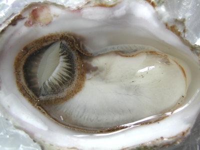

|  |
|
The Grid
Oysters.io provides a standardized tasting profile and grid for oysters. We hope such a profile will allow for better comparison, judging, discussion, learning, and most of all enjoyment!
You are welcome to download and use grid as you see fit:
Oysters.io Tasting Grid |
|